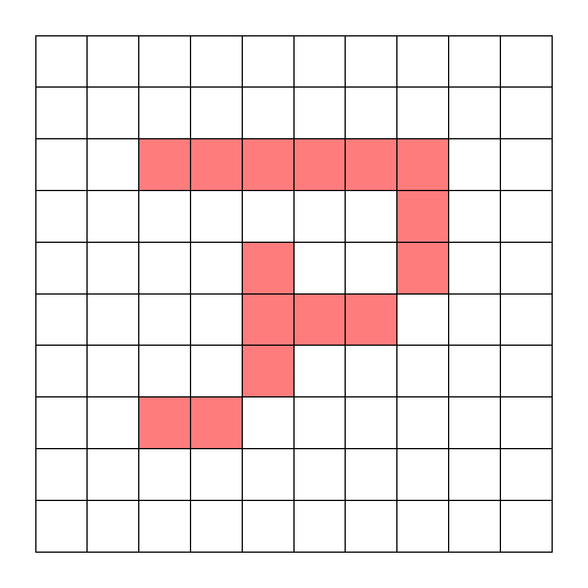
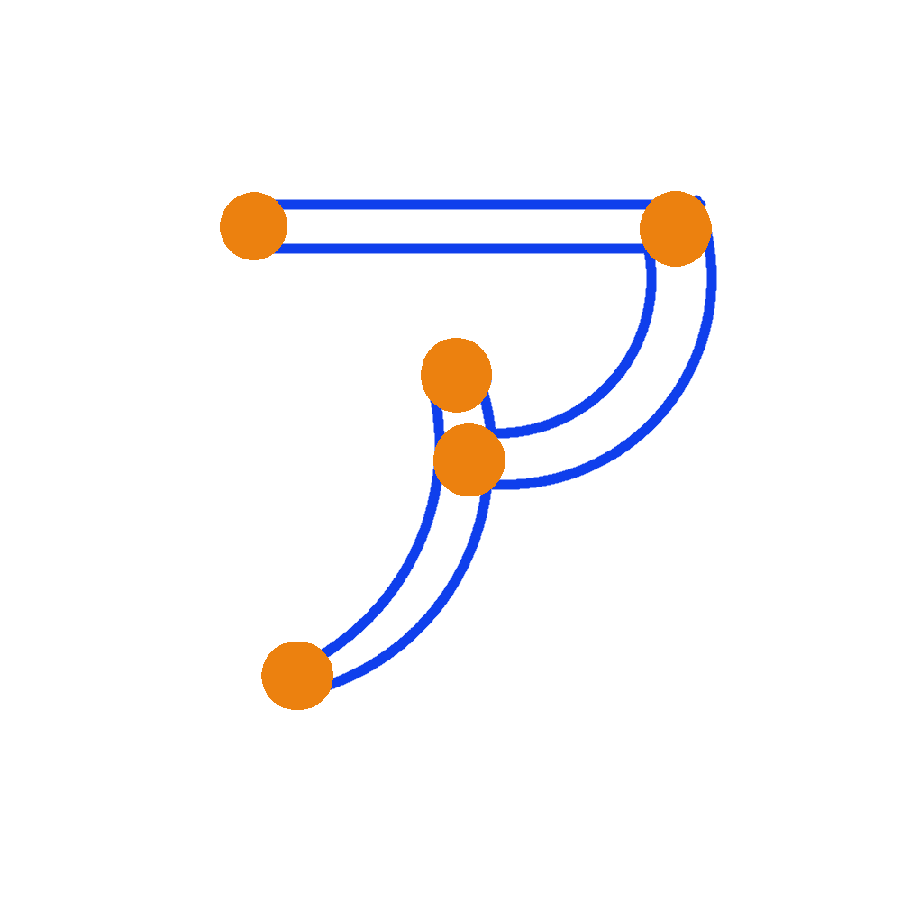

メモ
- デザイン＝最初からプロトタイピングを重ねていく、１つの項目からアイデアを派生させていく
→ 今後の社会（ビジネス）のトレンドに
- 従来のビジネス：マーケティングから得た結果を平均化＝当たり障りのないものばかり
- デザインの３つの意味のレベル＋心の動き、他との違い、美的感覚の必要性が高まる
- 日頃から様々なモノに触れて常にデザインについて考える習慣をつける
- 目的と手段を履き間違えないように注意する（例：プログラミング習得が目的になっていないか？プログラミング習得後何をしたい？）
ラスター画像とベクター画像
↓（右）ラスター画像イメージ （左）ベクター画像イメージ


- ラスター画像：ピクセル（小さな四角い粒＝画素）を集合させた画像、ピクセルが多いほど解像度が高い
- ラスター画像は色や濃淡の変化を滑らかに表示できるが、ベクター画像よりハードディスクの容量が大きく画像を拡大すると表示が荒くなる
- ラスター画像の用途は写真、コラージュ等 （編集ソフトはPhotoshop）
- ベクター画像:数式で曲線を管理して画像を表示する（曲線はコントロールポイントと呼ばれる点を繋いでいる）
- ベクター画像はサイズを変更しても画像のクオリティは変わらない
- ベクター画像曲線で描けて細かな色合いを必要としない文字やロゴ、デザイン、シンボルを使う製品に使われる
(用途：パンフレット、フライヤー、名刺などの印刷 編集ソフトはCorelDrowとAdobe Illustrator）
前の画面に戻る